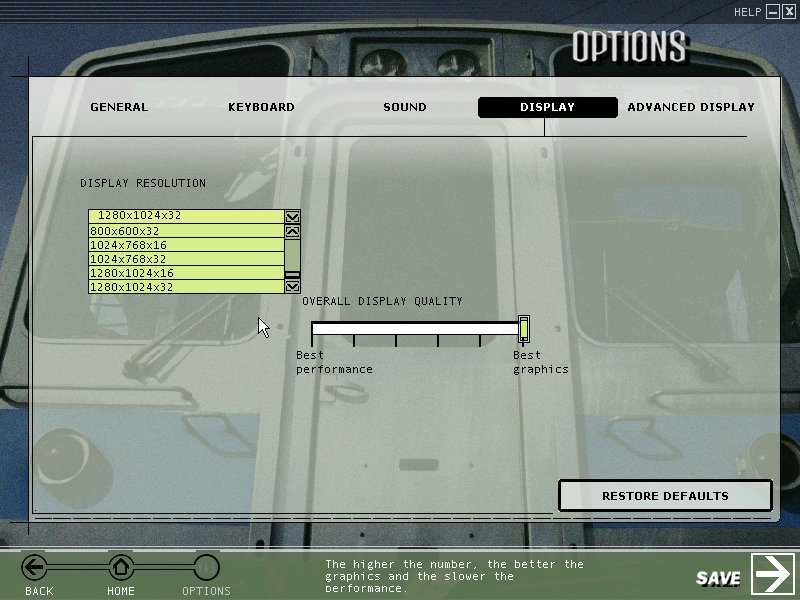

The key piece of information to solving this problem: the ATI Catalyst Centre will only permit you to enable "GPU Scaling" if the screen resolution is set to a less-than-optimal display resolution.
Right-click on the desktop and select "Screen Resolution":
Click on the Resolution drop-down box and drag the pointer down one notch to a lower resolution: in the image below, the monitor's native(=recommended) resolution is 1920x1080 pixels, so I've dragged the pointer down to 1600x900pixels:
Click "ok" and then "Keep Changes":
Now open the ATI Catalyst Centre, (select Advanced if it's set to Basic) then click on the Graphics tab and select Desktops And Displays:
Right-click on the black triangle in the top-right hand corner of the lower left image (arrowed below) and select Configure..., thus:
Success! The GPU Scaling section is now enabled:

Click on the radio button to enable Maintain Aspect Ratio, then click "Ok":
Finally, once more right-click on the desktop and select "Screen Resolution":
Set your screen resolution back to the recommended or native resolution, click "Ok" and "Keep Changes".
All done. When you next play MSTS, you'll open in a full-screen with black bars on each side, thus:

The last thing to do is to go into Options | Display and set the resolution: MSTS will only display available resolutions, so in the image below, the highest vertical resolution available is 1024 pixels (the monitor has a maximum verical resolution of 1080 pixels and the next available MSTS vertical resolution is 1200 pixels resolution, hence a maximum of 1024 pixels is displayed).

Click "Save". Now you're good to go.
Hope this helps.